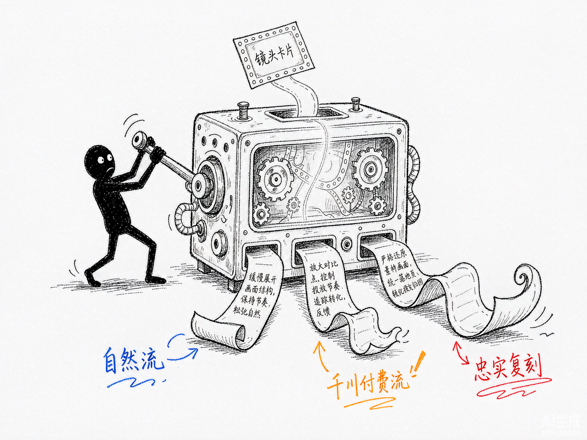

刷到一条带货爆款视频，想让 AI 照着再来一条？—— ecom-video-seedance-prompt 介绍
你刷到一条带货视频卖爆了，心想"我也想来一条这样的"。可真到自己写提示词就傻眼了：写"拍一个好看的视频"，AI 给你一坨废片；人家写的是"25 岁亚洲女性，黑色齐肩长发，缓慢转身，嘴角微微上扬，暖光侧逆光，中景缓慢推镜，面部不变形"——一次出片。差距不在模型，在提示词。可要把一条 10 秒视频逐帧拆成这样的分镜表，编导得盯半天。
ecom-video-seedance-prompt 就是来解决这件事的。
你给它一条带货视频，它还你一套可以直接粘贴进即梦（Seedance）的完整提示词包。基于 DeepSeek 视觉大模型。
它到底能做什么
- 看懂视频：1fps 抽帧 + 场景切换检测自动切镜头，每个镜头拆出一张 S-A-C-S-C 卡片——主体、动作时序、场景光影、镜头语言、色调情绪，一项不落。
- 全局分析：判断这是什么产品、什么带货框架、自然流还是付费流、钩子在哪、卖点是什么、节奏怎么排。
- 生成提示词包：每镜头一条（≤200 字，带时间锚点）+ 完整版整段（≤800 字，直接粘贴）+ 中英双语负面词 + @参考图清单。
- 三种风格开关：
faithful忠实复刻、organic自然流种草、paid千川付费流，同一份分镜表可反复换风格重出。 - 产品信息注入：
--product告诉它你卖的到底是什么（品牌、卖点、色号），别让 AI 自己去猜。 - 单镜头重出：
--shot B只重出不满意的那个镜头，其他镜头不动。 - 逐镜对照 HTML：每条提示词旁边就摆着原片关键帧，肉眼核对拆解得准不准。
- 拆解永久缓存：同一条视频出三版风格，只花 1 次拆解 + 3 次生成。
怎么用
你不需要记复杂流程。在 codex / workbuddy 等 agent 装好 skill、配好 DeepSeek key 后，直接对 AI 说话就行： 场景 1：拆解一条爆款视频 你：帮我拆解这条带货视频，看看它是怎么拍出来的。 AI：它抽帧切镜头、逐镜头做 S-A-C-S-C 拆解，再给出全局分析（品类、框架、流量类型、钩子、卖点），存成可反复用的分镜表。 场景 2：照着复刻一版提示词 你：按忠实复刻给我提示词，我卖的是 XX 品牌精华液，主打烟酰胺美白，蓝色玻璃瓶身。 AI：它结合分镜表和你的产品信息，生成每镜头提示词、完整版、负面词和参考图清单，附一份与原片的差异说明。 场景 3：换个流量逻辑再来一版 你：这版我们要跑千川投放，改成付费流。 AI：它按付费流规则系统性改写——强化钩子、极致特写、硬光侧逆光、加快节奏，提示词整包重出。

谁适合用
- 做电商带货、想批量复刻爆款视频结构的商家和投手。
- 帮客户做短视频的信息流代理商、编导。
- 想搞清楚"爆款到底好在哪"的内容从业者。
一点说明
ecom-video-seedance-prompt 是一套 AI 技能，装进 codex / workbuddy 等 agent 后对话使用，需要自备 DeepSeek API key。它是"翻译官"不是"播放器"——产出的是提示词，成片要到即梦里生成。模型没有音频模态，口播内容是从画面和字幕推断的，准确口播建议自己补（15 秒配约 120 字）。品牌 LOGO 等不可控元素会在差异说明里如实列出。姊妹版 glm-ecom-video-seedance-prompt 用 GLM 引擎，同一套方法论。